🌳 포근숲 친구들 Forest friends · 24 001 · FR-01 리본냥 민트 리본의 주황 고양이 002 · FR-02 몽이 포근한 귀의 강아지 003 · FR-03 모글 금테 안경 두더지 004 · FR-04 미루 주황 목도리 미어캣 005 · FR-05 코코 초록 잎을 안은 코알라 006 · FR-06 엘리 민트 스카프 코끼리 007 · FR-07 기리 나비넥타이 기린 008 · FR-08 까미 보라 리본의 검은 고양이 009 · FR-09 푸푸 보라 목걸이 말티푸 010 · FR-10 라미 민트 목도리 너구리 011 · FR-11 캥이 주머니를 가진 캥거루 012 · FR-12 보리 파란 리본의 보라 코끼리 013 · FR-13 호비 아기 호랑이 014 · FR-14 레오 아기 사자 015 · FR-15 울리 아기 늑대 016 · FR-16 코요 아기 코요테 017 · FR-17 하니 아기 하이애나 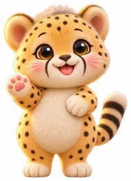
018 · FR-18 치치 아기 치타 019 · FR-19 폴리 아기 표범 020 · FR-20 로노 아기 코뿔소 021 · FR-21 하포 아기 하마 022 · FR-22 곰이 아기 갈색곰 023 · FR-23 다미 줄무늬 다람쥐 024 · FR-24 솔이 풍성한 꼬리의 청설모 🌊 산호빛 바다 친구들 Coral sea friends · 12 025 · OC-01 샤루 꼬마상어 026 · OC-02 오키 아기범고래 027 · OC-03 돌랑 아기돌고래 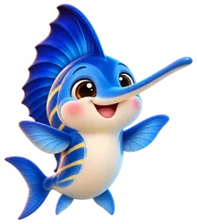
028 · OC-04 창파 아기새치 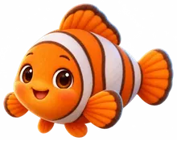
029 · OC-05 귤핀 아기흰동가리 030 · OC-06 옥토리 아기문어 031 · OC-07 잉키 아기오징어 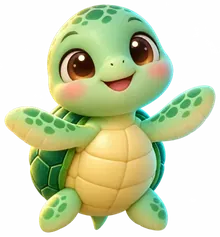
032 · OC-08 토르티 아기바다거북 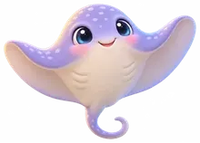
033 · OC-09 가오린 아기가오리 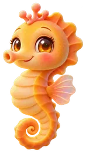
034 · OC-10 해몽 아기해마 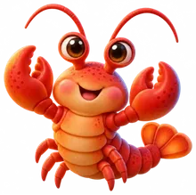
035 · OC-11 로브 아기랍스터 036 · OC-12 크라비 아기킹크랩 🦜 아마존 새 친구들 Amazon birds · 12 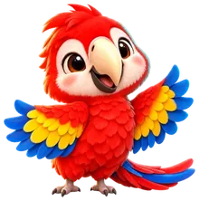
037 · AZ-01 루비윙 홍금강앵무 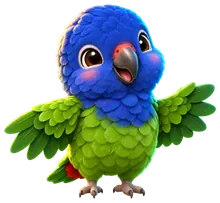
038 · AZ-02 코발 파랑머리앵무 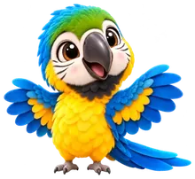
039 · AZ-03 금나래 청황금강앵무 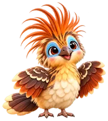
040 · AZ-04 호아리 호아친 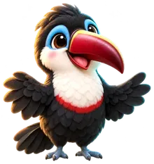
041 · AZ-05 부리온 흰목왕부리새 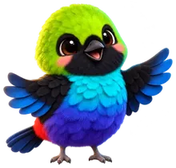
042 · AZ-06 무지리 파라다이스타나저 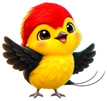
043 · AZ-07 실꼬미 실꼬리마나킨 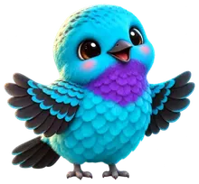
044 · AZ-08 청루 청록코팅가 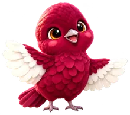
045 · AZ-09 자주린 퐁파두르코팅가 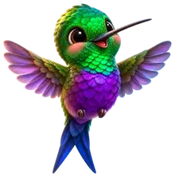
046 · AZ-10 비오라 갈래꼬리벌새 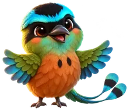
047 · AZ-11 모트리 아마존모트모트 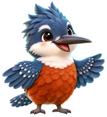
048 · AZ-12 리버링 고리물총새 🦕 아기공룡 친구들 Baby dinosaurs · 12 049 · DN-01 티로 티라노사우루스 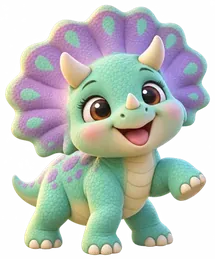
050 · DN-02 트리 트리케라톱스 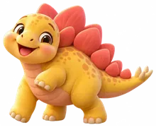
051 · DN-03 스테기 스테고사우루스 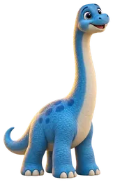
052 · DN-04 브라미 브라키오사우루스 053 · DN-05 디플리 디플로도쿠스 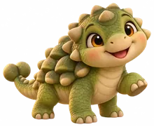
054 · DN-06 안키 안킬로사우루스 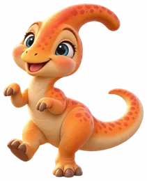
055 · DN-07 파라 파라사우롤로푸스 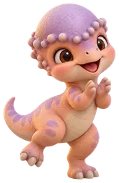
056 · DN-08 파키 파키케팔로사우루스 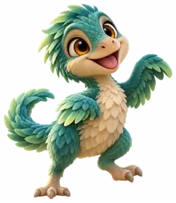
057 · DN-09 벨로 벨로키랍토르 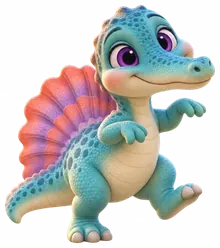
058 · DN-10 스피니 스피노사우루스 059 · DN-11 카르니 카르노타우루스 060 · DN-12 이구 이구아노돈 ❄️ 눈나라 동물 친구들 Snowland friends · 12 061 · PL-01 포리 북극곰 062 · PL-02 엠피 황제펭귄 063 · PL-03 아델 아델리펭귄 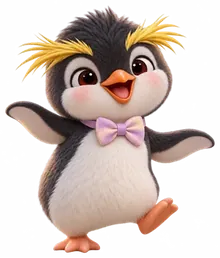
064 · PL-04 록키 바위뛰기펭귄 065 · PL-05 허스 썰매견 허스키 066 · PL-06 루프 북극늑대 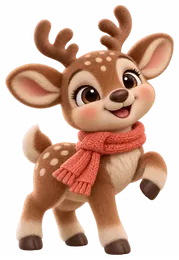
067 · PL-07 뿔이 순록 068 · PL-08 아이비 흰갈매기 069 · PL-09 하피 하프물범 아기 070 · PL-10 설이 북극여우 071 · PL-11 월리 바다코끼리 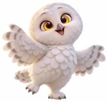
072 · PL-12 스노우 흰올빼미 💎 크리스탈 숲 우주귀염둥이 Crystal forest space cuties · 12 073 · CS-01 루미 파란 솜털 외눈 친구 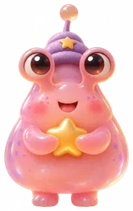
074 · CS-02 피치 별을 안은 복숭아 젤리 075 · CS-03 민티 민트빛 꼬마 우주인 076 · CS-04 포포 행성을 안은 라일락 친구 077 · CS-05 스노리 진주빛 솜사탕 친구 078 · CS-06 밤별 유리 헬멧의 은하 고양이 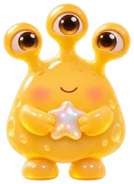
079 · CS-07 허니 세 눈의 꿀방울 친구 080 · CS-08 아쿠 작은 비행접시 친구 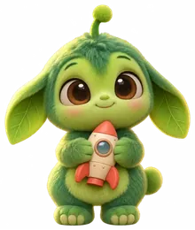
081 · CS-09 모스 로켓을 안은 초록 솜털 082 · CS-10 아메 수정별을 안은 보라 친구 083 · CS-11 젤루 무지개 촉수의 유리방울 084 · CS-12 로로 분홍 솜털 행성 친구 🤖 달빛 AI 로봇 친구들 Moonlight AI robots · 12 085 · RB-01 코랄네모 네 다리 네모 AI 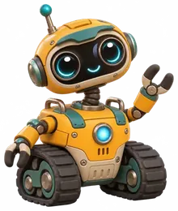
086 · RB-02 허니로버 궤도형 탐사 로봇 087 · RB-03 펄리 매끄러운 흰색 캡슐 로봇 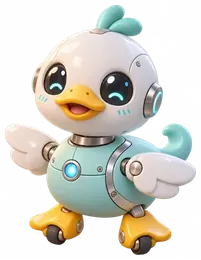
088 · RB-04 덕키 작은 오리 로봇 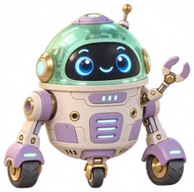
089 · RB-05 민트돔 돔형 서비스 드로이드 090 · RB-06 로지 로즈골드 관절 로봇 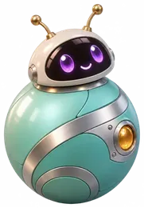
091 · RB-07 오르비 굴러다니는 구체 로봇 092 · RB-08 모듈 각진 분절 모듈 로봇 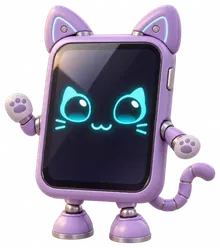
093 · RB-09 탭냥 고양이 태블릿 AI 094 · RB-10 포미 말랑한 돌봄 로봇 095 · RB-11 헥사 여러 다리 달 정비 로봇 096 · RB-12 젤리온 유리 돔 해파리 AI 🎃 할로윈 축제 친구들 Halloween party friends · 12 097 · HW-01 뿔콩 한복 조끼의 꼬마 도깨비 098 · HW-02 몽실 별 리본의 꼬마 유령 099 · HW-03 보라 작은 호박 모자의 마녀 100 · HW-04 별담 청록 별빛 마법사 101 · HW-05 달그락 나비넥타이의 해골 친구 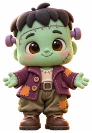
102 · HW-06 패치콩 봉제선의 초록 꼬마 103 · HW-07 루나 달빛 방패의 꼬마 기사 104 · HW-08 로제 장미 왕관의 꼬마 공주 105 · HW-09 펌키 호박옷의 축제 요정 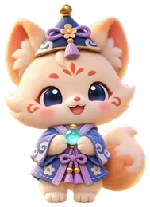
106 · HW-10 여우리 푸른 불꽃의 여우 요정 107 · HW-11 해솔 새벽빛 망토 영웅 108 · HW-12 수정 크리스탈 수호 영웅 🎤 별빛 아이돌 친구들 Starlight stage friends · 24 109 · ID-01 · 남자 아이돌 이든 안경 · 아이보리 코트 110 · ID-02 · 남자 아이돌 시온 검은 머리 · 라벤더 재킷 111 · ID-03 · 남자 아이돌 하준 갈색 머리 · 분홍 바지 112 · ID-04 · 남자 아이돌 리듬 헤드폰 · 데님 재킷 113 · ID-05 · 남자 아이돌 유안 금빛 머리 · 보라색 바지 114 · ID-06 · 남자 아이돌 태오 남색 재킷 · 금빛 별 115 · ID-07 · 남자 아이돌 하람 브이 손 · 하늘색 바지 116 · ID-08 · 남자 아이돌 민율 민트 머리 · 작은 마이크 117 · ID-09 · 남자 아이돌 도윤 복숭아색 점퍼 118 · ID-10 · 남자 아이돌 은찬 은빛 머리 · 파란 모자 119 · ID-11 · 남자 아이돌 라온 라벤더 베레모 120 · ID-12 · 남자 아이돌 해준 딸기금빛 머리 · 세일러 재킷 121 · ID-13 · 남자 아이돌 노을 짙은 파란 머리 · 노란 점퍼 122 · ID-14 · 남자 아이돌 로운 장밋빛 머리 · 민트 후드 123 · ID-15 · 여자 아이돌 세린 남색 긴 머리 · 오로라 재킷 124 · ID-16 · 여자 아이돌 아린 갈색 긴 머리 · 라벤더 바지 125 · ID-17 · 여자 아이돌 별하 금빛 단발 · 별 머리핀 126 · ID-18 · 여자 아이돌 채린 붉은 묶음머리 · 분홍 리본 127 · ID-19 · 여자 아이돌 나린 갈색 물결머리 · 남색 재킷 128 · ID-20 · 여자 아이돌 루아 검은 단발 · 빨간 재킷 129 · ID-21 · 여자 아이돌 다온 긴 앞머리 · 버건디 리본 130 · ID-22 · 여자 아이돌 소율 갈색 물결머리 · 하트 손 131 · ID-23 · 여자 아이돌 유리나 금빛 긴 머리 · 작은 마이크 132 · ID-24 · 여자 아이돌 예나 옆으로 묶은 머리 · 브이 손